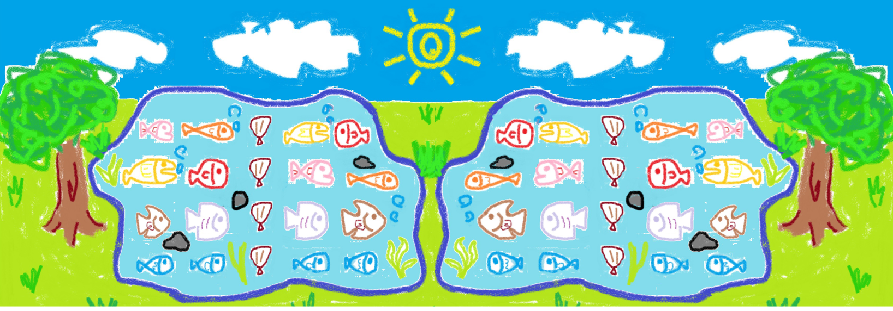

找不到,我的鑰匙到底在哪裏呢?我記得當時好朋友小光正好要去埤塘寫生，還邀請我一起去寫生，我那時心想反正閒著也沒事做，所以就跟她一起去埤塘寫生。
下面那張圖片是我依照看到的事物所畫的圖，請從這個圖找出線索，破解這張藏寶圖的秘密吧！
提示：
1.職務官舍是一個四層磚造混凝土構造建築物，以前這裡原本是一個大埤塘。
2.魚兒通常會順著同一個方向去游。
3.通關密語就在QR碼。

請輸入通關密語：
送出